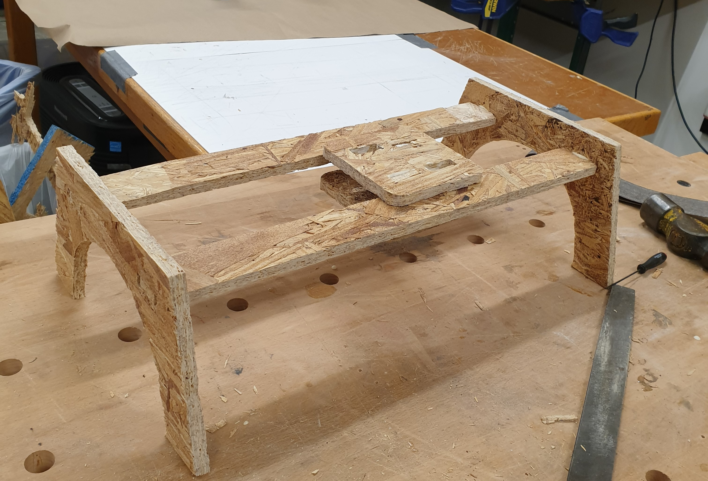
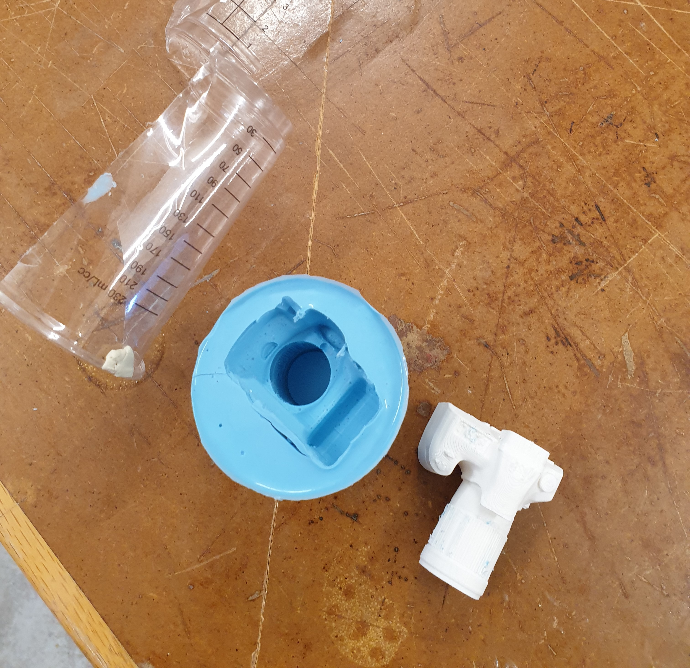

#This week’s assignment
For this week’s assignment, we were simply asked to design an object and use one of the CNC machines to cut out an object out of the chosen material. We were also asked to use the molding and casting techniques to re-create an object.
##My ideas
I decided that I will try to build a wooden, at scale prototype of my final project idea: a slider. The slider would be movable, however it would not mimic the final slider concept very faithfully, as I am only looking . I knew that I would cut OSB in specific shapes and then assemble them together to form the final product. Furthermore, I would also like to 3D print the model below of a DSLR camera - however, this one would not be 3D printed at scale, as it would take too much time and resources to produce. I will then create a mold of the model using Sorta-Clear 37 material. I will then cast using plaster.
##Designing the slider
Designing the slider was relatively straightforward, as I mainly used extrusion methods to model all the components. The extrusion length would be based on a user variable that I could eventually modify (depending on the thickness of the OSB). After creating a couple simple joints with the different components, I got the model you can see below. The base seen in the middle should be free to move on one axis only.
<iframe src="https://college401.autodesk360.com/shares/public/SH9285eQTcf875d3c53943729888dc501396?mode=embed" width="640" height="480" allowfullscreen="true" webkitallowfullscreen="true" mozallowfullscreen="true" frameborder="0"></iframe>
Of course, I could not utilize the 3D model itself for a CNC machine, so I had to export all components shapes as DXF files. I did this by using the “projection” feature. After getting my files out of Fusion360, I used Aspire to arrange all my vectors - which was relatively similar to the laser cutter software. However, there were many more steps I had to take with this machine, more specifically if I wanted to cut from the interior of the line or from the exterior. I also had to make sure to add splinters to the exterior cuts so that they don’t move around while cutting. After doing an air cut, I saw that everything was working well, so I decided to start the cutting process. At the end, I separated the board, only to find out that it didn’t cut all the way through the OSB because I set the thickness of the board at 10.8 mm instead of 11.3 mm. This unfortunately meant I had to re-cut the components from a new board.
<div class="two-image-row">
<img src="./Images_Week_8/20221021_160412.jpg" class="half-width-image"/>
</div>
After setting the new thickness, I re-cut the components. I cleaned up the machine, and got my cut parts - which were filled with uneven splinters. I sanded them up, and I was eventually able to then build the slider. While the joints I created were relatively strong, I decided to add wood glue for more strength. Below, you can see the final slider I built.
<div class = "flex-center-full-size">

</div>
##Molding and casting
I was aware that the process of molding and casting would indeed take several days, so I started as early as possible by 3D printing the mini DSLR. I found the 3D model online, imported that in Fusion 360, and then exported it into the Prusa Slicer software.
<iframe src="https://college401.autodesk360.com/shares/public/SH9285eQTcf875d3c539553bc6840ebf1a23?mode=embed" width="640" height="480" allowfullscreen="true" webkitallowfullscreen="true" mozallowfullscreen="true" frameborder="0"></iframe>
Below you can see the final result of the 3D print - before and after taking out the supports.
<div class="two-image-row">
</div>
Afterwards, I combined the components A and B of the Sorta-Clear 37 - both with a similar volume - and then placed them in the cup with the 3D print. After waiting about 17 hours, the mold was almost entirely finished. To get my 3D print out I had to cut a part of the mold, however, it was insignificant enough that I knew I could just tape it back when doing the casting. Below you can see the images of the mold before and after being hardened.
<div class="two-image-row">

</div>
Lastly, I did the casting of the camera using plaster. For the plaster, the ratio of powder to water was around 100 to 67 grams. After carefully measuring both quantities, I mixed them up well, and placed the substance in the mold. After waiting another 17 hours, the plaster hardened, and I was able to get it out of the mold. I found the plaster to still be soft on the surface - however, after a couple hours it hardened completely. Below, you can see an image of the casting process and an image of the final result.
<div class="two-image-row">
</div>